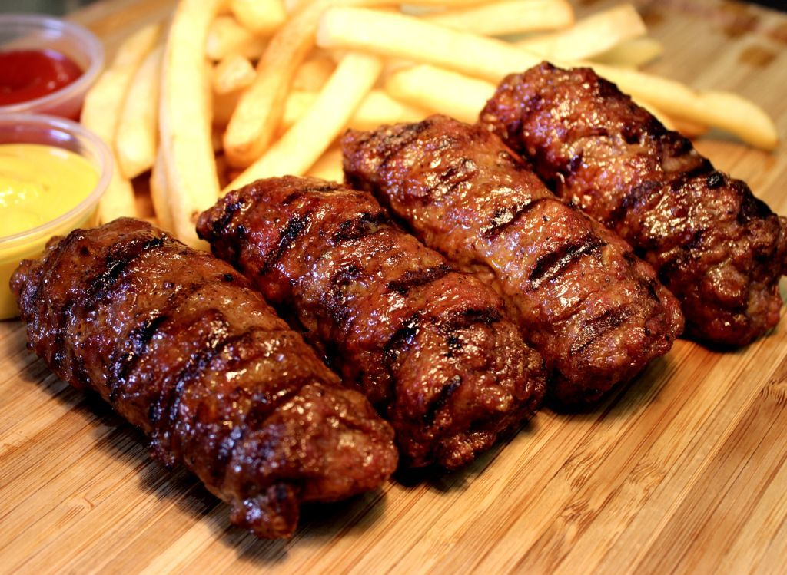

Mititei

Beschreibung:
Gegrillte rumänische Hackfleischröllchen (Mici oder Mititei) eignen sich hervorragend zum Grillen, können aber auch gebraten oder in der Pfanne gebraten werden. Servieren Sie sie heiß mit gutem italienischen Brot und Senf und einem kalten Bier. Sie eignen sich hervorragend für Hinterhofpartys.
Vorbereitungszeit: 40 Minuten
Kochzeit: 5 Min.
Zeit insgesamt: 45 Min.
Portionen: 4
Zutaten:
- 2 Pfund Rinderhackfleisch
- 8 Unzen gehackter Talg
- ¼ teaspoon baking soda
- ¼ Teelöffel Backpulver
- ½ Teelöffel Kümmel
- 3 Knoblauchzehen, gehackt
- Salz und Pfeffer nach Geschmack
- 1 Teelöffel fein gemahlene Wacholderbeeren
- 2 Esslöffel Wasser
- 3 Esslöffel Pflanzenöl
- 2 Esslöffel Rinderbrühe
Vorbereitungsschritte:
- In einer mittelgroßen Schüssel Hackfleisch, Talg, Backpulver, Kümmel, Knoblauch, Salz, Pfeffer und Wacholderbeeren mit den Händen vermengen. Etwa 15 Minuten lang mit den Händen mischen und dabei jeweils ein wenig Wasser hinzufügen. Wenn Sie möchten, können Sie diesen Teil einige Stunden im Voraus zubereiten.
- Heizen Sie einen Grill auf hohe Hitze vor. Das Fleisch mit feuchten Händen zu Rollen formen, die etwa 3 cm lang und 1 cm dick sind. Leicht mit Öl bepinseln.
- Das Fleisch 5 bis 10 Minuten grillen, dabei häufig mit einer Mischung aus Rinderbrühe und restlichem Öl begießen, bis es gut durch ist.